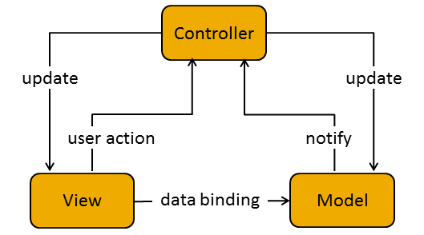

Welcome to the next learning module of the class. For the next two weeks, we'll be introducing the important topic of Model - View - Controller.
Model–View–Controller (MVC) is a software architectural pattern for implementing user interfaces. It divides a given software application into three interconnected parts, so as to separate internal representations of information from the ways that information is presented to or accepted from the user. This architecture has become extremely popular for designing web applications.
In the diagram above, the three components of the MVC architecture are shown along with their interactions.
One of the chief underlying principles behind the popularity of MVC architecture is Separation of Concerns. The idea is that a software system should be broken into smaller parts that perform specific tasks and overlap in function as little as possible. If done properly, this 'de-coupling' of functionality can lead to better maintainability, extensibility and reusability of the various components.
In today's development market, MVC libraries and frameworks are in practically universal use. There are implementations in most major languages, and each one approaches the same problems a little differently. Is one any better than the next? Well, if you ask a group of developers that question, things might get heated pretty quickly. There are strong opinions in the developer community, but the truth is that each option does something well, and the best solution usually depends on the individual project.
For this module, we will look at high-level concepts and work with one of the most popular MVC frameworks in today's market, AngularJS. Also, we have also included the source code, documentation and a text reference for BackboneJS. There are no specific exercises here for Backbone, but feel free to play with it if you like.
AngularJS is one of the most popular MVC frameworks currently in use, and it will be our focus for this module. There is no way that we could possibly cover the entire scope of this feature-rich software in such a short period of time, so we will spend our time introducing high-level concepts and writing code to implement basic Angular functionality.
If you find that you move quickly through this material, there are additional text resources linked below in the "Additional Reading Material" section.
To get started, follow this link - Introduction to AngularJS
When you're ready to move on, this section offers some easy, and some more challenging exercises with Angular. Be sure to read the documentation thoroughly, to use your Zeal docs for Angular, and to read the code comments in the "/angularjs-part-01/"" exercise files.
To get started, follow this link - AngularJS Exercises
Even though we won't really be working with RESTful practices in this module, they are closely related to the topic of routing within web applications, especially using MVC architecture. We'll introduce them here, and include some references in the Additional Reading Materials below.
REST stands for Representational State Transfer, and is an architecture for creating web services. Read the following material for an introduction to the concepts. You'll definitely learn more about this later!
Your goal for this learning module should be the following: